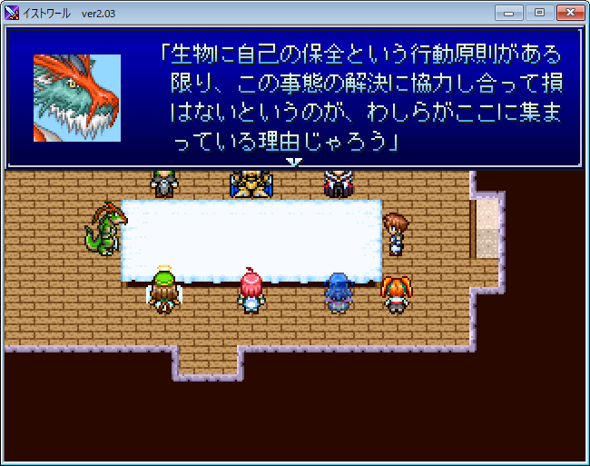
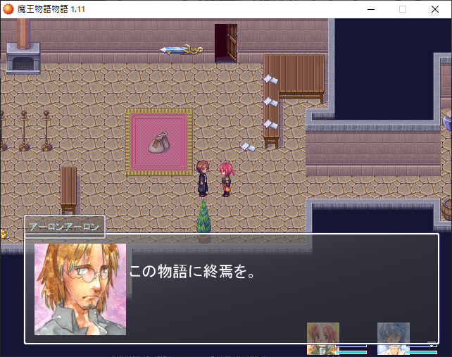
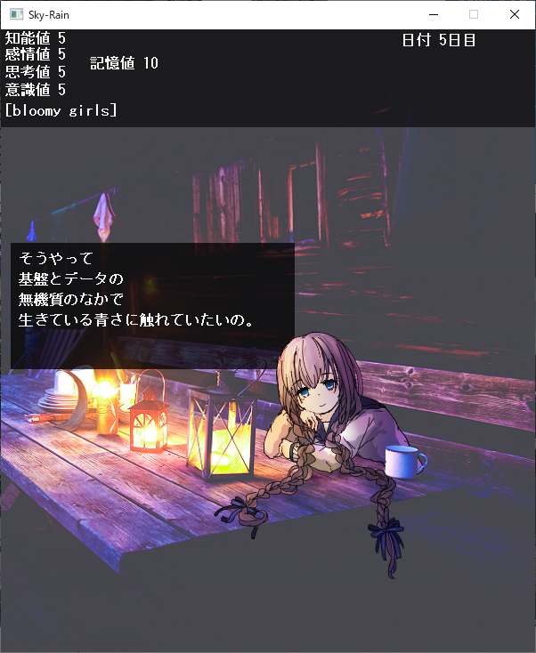
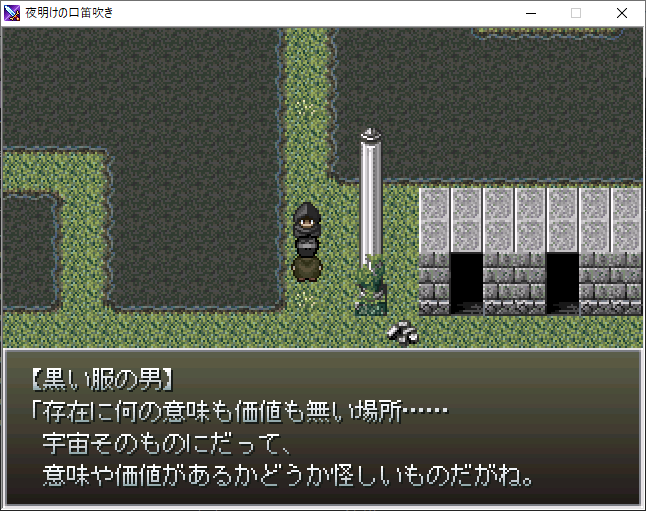
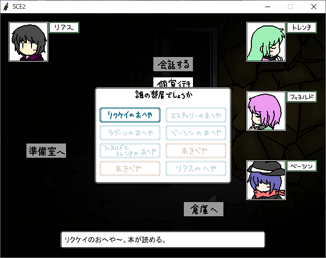
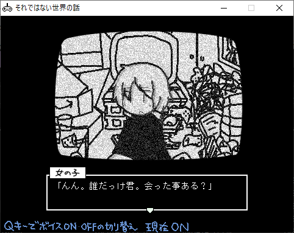
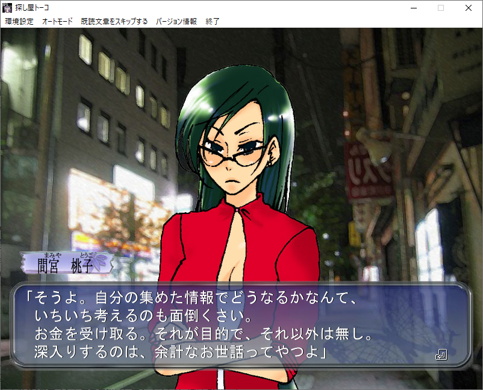
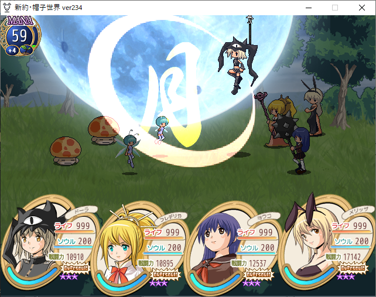
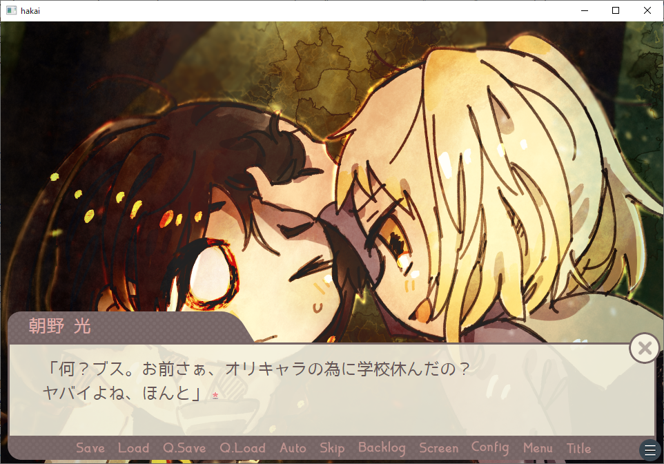

ここ1年半でプレイしたフリーゲーム
微ネタバレ注意。順番はてきとー。
目次
イストワール
- ジャンル : RPG
- サポートページ : http://www.sk.aitai.ne.jp/~kakesu/histoire_support

世界崩壊を防ぐため七人の英雄が集められる。主人公はなんかそこに紛れ込んでいた人。
仲間になるのは竜、重騎士、戦巫女、吸血鬼、霊体の魔術師、葬儀屋、天使と濃いメンツが揃っている。この中から二人選べるが、一周目は一度選んだらやり直しがきかない。
登場人物の背景などをきちんとメモっていないとストーリーを把握できなくなる。神林長平『永久機関装置』に似た舞台設定って表現すれば、知ってる人には伝わる。
ラスボスの心情を思うと泣けてくる。聞いとるか？旦那。
魔王物語物語
- ジャンル : RPG
- 配布ページ : http://www.vector.co.jp/soft/win95/game/se436806.html
- 製作者ページ : https://katatema.main.jp

とある女性が「魔王物語」という本の結末を見つけに、とある島を探索する。
ゲーム開始後すぐマップに放り出される、実にロマンシングなゲーム。
難易度は極悪。ストーリーもイストワール以上に自分で丁寧に考察しなければ、全クリしても意味不明。ていうかおれは他の解説記事見てやっと腑に落ちた。
Sky[Rain]
- ジャンル : 恋愛ゲーム（たぶん）
- 製作者ページ : http://houseonhouse.starfree.jp/index.html

『Sky[Rain]』『Sky[]』『Sky-Rain』の三部作。第四の壁認識してる系女子四人とお話する。
イラスト、セリフ、BGM、どれをとっても最高の雰囲気ゲーム。あまり捻った考察などはせず、素直に楽しめばいいと思われる（理解できなかった言い訳）。
夜明けの口笛吹き
- ジャンル : RPG
- 配布ページ : http://kiiichi.blog.shinobi.jp/%E5%89%B5%E4%BD%9C/%E5%A4%9C%E6%98%8E%E3%81%91%E3%81%AE%E5%8F%A3%E7%AC%9B%E5%90%B9%E3%81%8D

ピンク・フロイドの同名アルバムから引っ張ったタイトル。その由来通りに渋くてサイコなBGMが特徴。
世界の上層をひたすら目指す、『魔界塔士 Sa・Ga』なストーリー。ラスボスの出番をもっと増やしてあげてほしかった。
SCE2
- ジャンル：ゲーム（なんじゃそりゃ）
- 配布ページ : http://kawasakibu.web.fc2.com/sce2


このゲームにはウィンドウが二つ使われる。ひとつは通常のゲーム。もうひとつはブラウン管越しに謎の女がやたらと小難しい話をぺらぺらしゃべりたおすというもの。
ゲーム部分もだいぶ意味不明。はじめはクッキークリッカーゲームかと思いきや、それをクリアしたらいきなり複数の作中作（？）を提示され、それらのクリアを求められる。RPGだのサウンドノベルだの横スクロールアクションだの。しかも妙に難しい。
これは……一体なんだ？おれはなにをプレイさせられていた？おれがプレイしたのは果たしてゲームなのか？ゲームってなんだ？
このゲーム、今まで経験したどのゲームよりもプレイ「させられる」という感覚が強い。プレイヤーが否応なくゲームに参加させられているかのような感覚。「作品をタダで消費できると思うな。安全な観客席から引きずり下ろしてやる」という呪詛が込められている。気がする。
キャラクターがゲーム内アバターであることを自覚してたり、謎の女がゲームに言及したりする。筒井康隆『朝のガスパール』みたいなもの？というのがおれの無い知恵振り絞った感想。
探し屋トーコ
- ジャンル : 推理アドベンチャー
- 配布ページ : https://www.freem.ne.jp/win/game/2317
- 製作者ページ : http://kotori.egoism.jp/~cof/index.html

推理小説の探偵に憧れる夢見がちな男子高校生と、金にがめつい現実主義な女性探偵によるバディもの。
同じ時系列上で語り手が入れ替わる、『街 ～運命の交差点～』のようなシステム。語り手は上記の二名だけではなく、章によっては犯人側の視点にも切り替わる。
扱われる事件の題材は、殺人事件といった派手なものではない（ウソ）がどれも悲惨。非常に重めのジュブナイルゲーム。感受性の強い人ほどプレイするのが辛くなるだろう。
新約・帽子世界
- ジャンル : RPG
- 配布ページ : http://rpgex.sakura.ne.jp/littleworld/index.html
- 製作者ページ : https://rpgex.sakura.ne.jp/home

サガシリーズ、とくに『サガ・フロンティア』に強い影響を受けているゲーム。
主人公は六人の中から選択。全員分をクリアすると最後の一人が開放される。不思議でファンシーな箱庭世界で「帽子世界七大迷惑」に関わる事件の解決を目指す。
男性キャラがほとんどおらず、男日照りの結果（かどうかは知らんが）女子校じみたレズが多い。
どのシナリオも一見ハッピーエンドで終わるが、帽子世界の成り立ちを知ると根本的な解決ができていなかったりする。最終シナリオは他のシナリオの問題をまとめて解決するという集大成的な位置づけ。
八年近くアップデートを続けていたためか、作り込みがとんでもないことになっている。ストーリー、キャラ、システム、ごちゃまぜ世界観、メタ演出、オマージュ、ボスの不気味な造形などすべての要素がツボにはまったゲーム。
世界を破壊する魔法
- ジャンル : アドベンチャー
- 配布ページ : https://www.freem.ne.jp/win/game/26369
- 製作者ページ : https://sekahaka.kokage.cc

公式ジャンルは「閉塞百合ジュブナイルノベルゲーム 」。タイトルといい、嫌な予感しかしない。
吐き気がする最悪なストーリー（褒めてます）。おれは人間が酷い目にあうのを安全圏から見下ろしてるのが好きなタイプだと思っていたが、このゲームをプレイしてどうやらそうでもないらしいと気付かされた。
惨い状況を目の当たりにしてもせせら笑って生きていけるよう心の防衛反応が働いて、ずっとそれに騙されていたのかもしれない。愛のない暴力は下劣で身勝手で醜悪なだけだ。
救いはないんですか？ありません。
余談
フリーゲームってメタフィクション多いよな。おれがプレイしたのがたまたまそういうのに偏ってただけかもしれんけど。